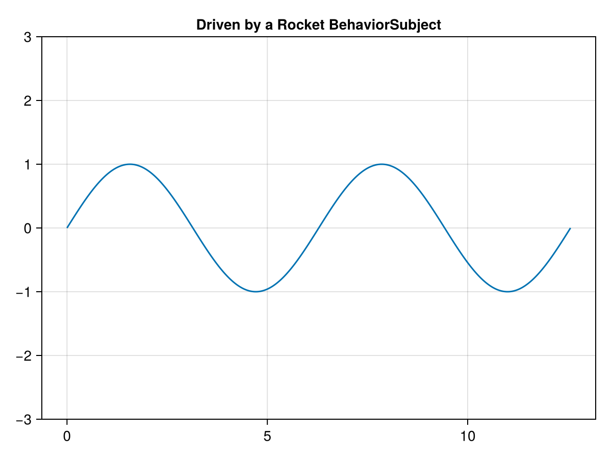
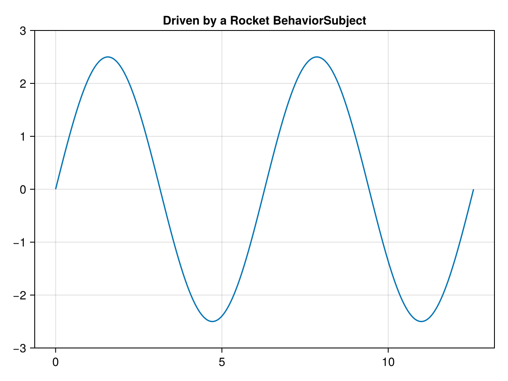

Makie & Observables.jl
Observables.jl is the reactive primitive that powers the Makie plotting ecosystem. An Observables.Observable is a single container that holds a value and notifies a set of listeners whenever that value changes.
Rocket.jl is a full ReactiveX / RxJS-style reactive programming library: it provides cold and hot observables, Subjects, schedulers, and a large catalogue of composable operators. With this in mind, Rocket.jl can be used to express rich reactive logic that then drives a Makie visualisation.
When the Observables package is loaded alongside Rocket.jl, a package extension (RocketObservablesExt) is loaded automatically and provides a bidirectional compatibility layer between the two libraries. This requires Julia 1.9 or higher.
The extension only adds methods to functions that already exist in either package (this is a hard requirement of Julia's package-extension mechanism, which cannot export new names). Concretely, it overloads the Observables.Observable constructor and teaches Rocket's subscribe! to accept an Observables.Observable.
Comparison with Observables.jl
| Concept | Observables.jl | Rocket.jl |
|---|---|---|
| Reactive container | Observable(value) | Subject, BehaviorSubject, RecentSubject, ReplaySubject |
| Current value | observable[] / to_value(x) | getcurrent(behaviorsubject) / getrecent(recentsubject) |
| Push a new value | observable[] = x | next!(subject, x) |
| React to changes | on(f, observable) | subscribe!(source, actor) |
| Stop reacting | off(observable, f) | unsubscribe!(subscription) |
| Derive a value | map(f, observable) | map + dozens of other operators |
| Error / completion | not modelled | error! / complete! events |
The key conceptual difference: an Observable is a value that changes, whereas a Rocket observable is a stream of values over time. A BehaviorSubject (which always carries a current value and replays it to new subscribers) is the Rocket type that most closely matches the semantics of an Observable.
Using Rocket.jl with Makie
Because Makie decides whether something is reactive by checking whether it is an Observables.AbstractObservable, a Rocket observable cannot be handed to Makie directly. Instead, you convert a Rocket source into a genuine Observable with a single call — Observable(source) — and pass that to Makie. From then on, every value emitted by the Rocket source is pushed into the Observable, and Makie updates automatically.
In the example below we build the plotting data with a Rocket pipeline: a BehaviorSubject holds an amplitude, and a map operator turns it into a curve. Converting the pipeline to an Observable lets Makie plot it.
using Rocket, Observables, CairoMakie
x = range(0, 4π; length = 300)
# A Rocket pipeline: an amplitude drives the y-data of a sine curve.
amplitude = BehaviorSubject(1.0)
curve = amplitude |> map(Vector{Float64}, a -> a .* sin.(x))
# Convert the Rocket pipeline into an Observable that Makie understands.
ydata = Observable(sin.(x), curve)
fig = Figure()
ax = Axis(fig[1, 1], title = "Driven by a Rocket BehaviorSubject")
ylims!(ax, -3, 3)
lines!(ax, x, ydata)
fig
Now we push a new amplitude through the Rocket subject. The emission flows through the map operator, into the Observable, and Makie redraws the figure — we never touched the Observable or the plot directly:
next!(amplitude, 2.5)
fig
Using Makie observables with Rocket.jl
The bridge also works the other way around: any Observables.Observable (for instance the value observable of a Makie Slider or Menu) is a valid Rocket source. You can subscribe! to it and run it through the full Rocket operator pipeline.
using Rocket, Observables
# Pretend this is the value observable of a Makie widget.
slider = Observable(0)
# Compose Rocket operators on top of it.
squares_of_evens = keep(Int)
subscription = subscribe!(slider |> filter(iseven) |> map(Int, x -> x ^ 2), squares_of_evens)
for value in 1:6
slider[] = value
end
getvalues(squares_of_evens)4-element Vector{Int64}:
0
4
16
36unsubscribe!(subscription) # detach the listener from the ObservableThe current value of the Observable is emitted immediately upon subscription (mirroring BehaviorSubject semantics), and every subsequent slider[] = value is forwarded into the Rocket stream.
Summary
Observable(source)/Observable(initial, source)— convert a Rocket source (any subscribable, subject, or operator pipeline) into anObservables.Observablefor Makie.subscribe!and every Rocket operator accept anObservables.Observabledirectly — letting you build reactive pipelines on top of Makie widgets.